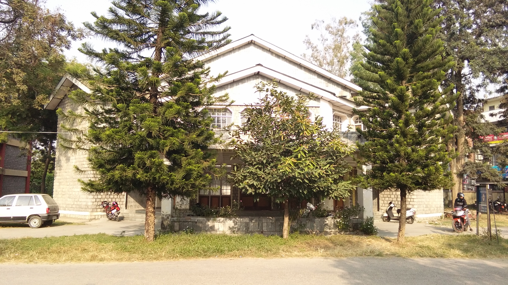
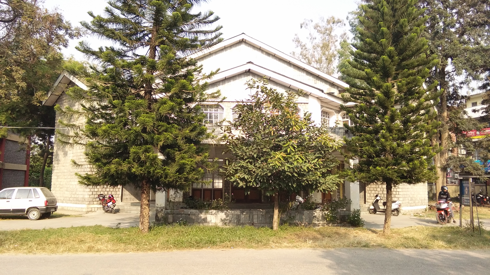

Driving along the state highway 21 from Hoshiarpur to Dharmshala, one reaches the famous and historical town of Kangra, (distt. Kangra H.P.) Sacred to the devotees of Mata Brajeshwari and the center of attraction for the tourist and archaeologist for its legendary fort dating back to the Mahabharta times. In the heart of this Kangra town, just near its bus stand is situated the stately campus of Government Polytechnic Kangra. Located almost in the lap of the picture-post card like Dhouladhar range, this polytechnic is one of the nine polytechnics under the Department of Technical Education, industrial and vocational training, Himachal Pradesh.
Govt. Polytechnic College Kangra came into existence in the year 1992, with the up gradation of erstwhile Junior Technical School established by Punjab Govt. in 1959. This polytechnic has earned the reputation of being one of the premier institutes of the state by producing and providing technically competent, professionally proficient and socially relevant human resources to cater for the industrial and technological world of work. This Polytechnic has attained the capability and distinction of acquiring ISO 9000-2001 by developing the optimal infrastructure, and becoming a cynosure for the seekers of the technical education.
This Polytechnic is imparting three year diploma courses in the emerging areas of technology viz. Computer Engineering, Electronics and Communication Engineering, Electrical Engineering, Instrumentation Engineering and Mechanical Engineering.
During the recent years this campus has been a center of attraction for various top rated national and international companies like Cadbury India, HCL Infosystems, Tata Teleservices, CIPLA etc and has maintained its distinction of achieving more than 100 percent placement.
Kanga airport (Gaggal) is 7-km away which is connected with New Delhi and Chandigarh by Indian Airline Flights. The Distance of GOVT. POLYTECHNIC, KANGRA from Delhi is 510 Kms.
Nearest broad-gauge railhead at Pathankot is 86-km away. This can be reached by taking the Kangra Valley Express plying between Pathankot and Joginder Nagar.

 
